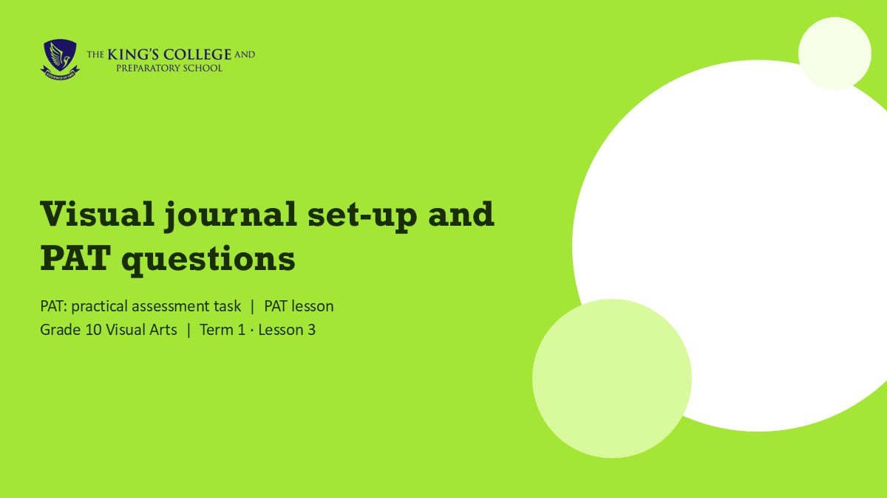

Term 1 · Lesson 3 · PAT lesson
Visual journal set-up and PAT questions
Start here
Today I will
- Get clear answers to my PAT questions
- Set up my VJ with a cover page, index and filing pocket
- Start a page of annotated mark-making
Think first
If someone found your VJ in a year's time, how would they know what you were thinking?
Words to Know
| Word | Meaning |
|---|---|
| Annotation | Short notes beside your work that explain what you did, why and what you learnt. |
| Index | A contents page that lists each VJ page and what is on it. |
| Sourcebook | Another name for a visual journal: the place where ideas and sources are collected. |
| Reference image | A photo or picture you use to help you draw or develop an idea, always noted with its source. |
| Mark-making | Exploring the different marks a tool can make: lines, dots, hatching, smudges and textures. |
Slides

Notes
Answering the PAT questions; setting up the VJ with a cover page, index and filing pocket; what an excellent VJ page looks like (annotation, experiments, references, dates).
What an excellent VJ page has
- A date and heading: Every page is dated and titled so your work can be followed in order.
- Experiments: Try things out: different tools, pressures and media, including attempts that did not work.
- Annotation: Notes next to each experiment: what you did, what happened and what you would change.
- References: Reference images are stuck in neatly, with where they came from.
- A full page: Use the space well: layered images, sketches and notes, not one small drawing in the middle.
Setting up the VJ
- Cover page: Your name, grade and a visual that shows something of you or the PAT theme.
- Index: Two pages ruled into columns: page number, title, date. Fill it in as you go.
- Number the pages: Number every page in the top corner so the index works.
- Filing pocket: Glue an A4 envelope inside the back cover for loose sheets, briefs and handouts.
Remember
If it is not annotated, the marker cannot see your thinking.
Practical
You need: Visual journal, glue, scissors, A4 envelope
VJ set-up and mark-making
- Design your cover page with your name, grade and a visual of your choice.
- Rule up your index pages and number the pages of the VJ.
- Glue the A4 envelope inside the back cover as a filing pocket.
- On a new dated page, make at least eight different marks with one pencil.
- Annotate each mark: how you made it and where you might use it in an artwork.
- Add 'Mark-making' and its page number to your index.
Test yourself
- Why should every VJ page have a date?
- What does annotation mean?
- What is a filing pocket used for?
Show answers
1. So the development of your work can be followed in order. 2. Short notes that explain what you did, why and what you learnt. 3. Keeping loose sheets, briefs and handouts safe.
Finished early?
Eight more marks
Push your mark-making further with a different tool from your pencil case.
- Date a new VJ page and head it 'Mark-making 2'.
- With a different pencil grade or a pen, make eight new marks: try dots, hatching, smudges and textures.
- Annotate each mark in a full sentence: how you made it and where you could use it in an artwork.
- Add the page and its number to your index.